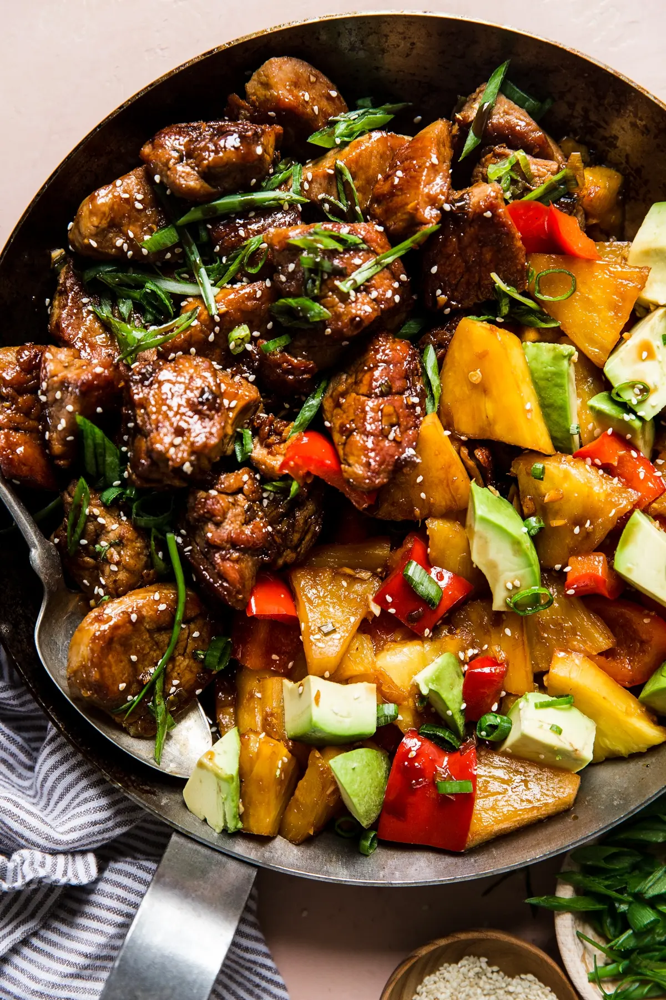

Pineapple Pork Recipe
Description:
Studded with juicy, tart fresh pineapple and crunchy bell peppers, this deeply flavorful pork stir-fry is an easy, healthy way to bring a taste of the tropics to your weeknight table.
Ingredients: serves six
- 2 pounds: pork tenderloin, cut into 2" cubes
- 2 tablespoons: olive oil
- 1 teaspoon: salt
- 2/3 cup: soy sauce
- 1/2 cup: rice vinegar
- 1/4 cup: honey (optional)
- 6 cloves: garlic
- 1 tablespoon: fresh ginger, minced
- 1 bunch: green onions, thinly sliced
- 1: pineapple, diced
- 1: red bell pepper, diced
- 1: avocado, diced
- Serve with rice (coconut rice preferred)
Steps:
- Heat the oil in a large skillet over high heat. Season the pork with 1 tsp salt.
- Stir-fry the pork until golden brown all over, 5-7 minutes. This may need to be done in two batches, depending on the size of your skillet.
- In a small bowl mix the soy sauce, rice vinegar, honey, garlic, ginger, lighter parts of the chopped green onion—reserve the darker green tops to use as a garnish.
- Transfer all of the cooked pork tenderloin pieces back to the hot skillet, along with the diced pineapple and pepper . Pour the sauce over the pork and simmer sauce, stirring often, until sauce thickens and slightly reduces, about 3 minutes. Add in cubed avocados and remaining chopped green onions. Serve as is or over coconut rice and enjoy!